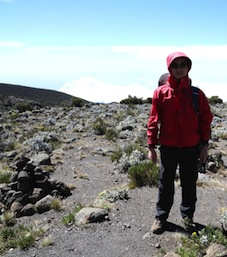

薛兆鑫 Tony Xue

I am currently a student at RDFZ
I have been learning and have a great interest on computer related subjects.
I am studying Computational Photography related with my teacher 武迪(Di Wu)
This is my classmate 刘嘉南(James Liu)
(He has a better page than mine because he's a front end programmer but I'm a Linux person. :P)
Contact：
The easiest way to reach me is through WeChat.
My WeChat ID is sitsiuyam(<-- Click to get my WeChat QR Code).
E-mail: tony _at_ xue.gg (click for my GPG key)
I am an associate member of FSF (Free Software Foundation) and I hope more people that share the same interest can join the foundation!
![[FSF Associate Member]](http://static.fsf.org/nosvn/associate/fsf-12714.png)
Education：
2012-2015 International Curriculum Centre, The High School Affiliated to Renmin Univ. of China
2009-2012 Junior High School, The High School Affiliated to Renmin Univ. of China
My projects ongoing：
1.Collaboration website for Toyhouse@THU
I am currently working on a collaboration websiten for
Prof. Ben Koo from Tsinghua University.
2.Tor node

Tor is a research project, funded by the National Science Foundation and previously DARPA (among others).
Its primary goal is to provide people from hostile environments with encrypted and uncensored access to the Internet.
3.FasterApple
A public DNS that accelerate the speed of App Store in China.
Computer related experience：
 Blender 3D
Blender 3D
 Sony Vegas Pro
Sony Vegas Pro
 More than three years of Linux system and server maintaining experience
More than three years of Linux system and server maintaining experience
 More than three years of Windows server maintaining experience
More than three years of Windows server maintaining experience
Six months of DDOS learning
More than three years of DNS related researches
Two years of C++ experience
One year of basic algorithm study
Six months of Objective-C study
Other Experience
Registered and inversted a few valuable domains
Currently learning linguistic psychology related subjects
Doing researches on copyright and creativity
Links:
My blog(in Chinese)
2014 Handmade in Beijing
No copyright, No license.